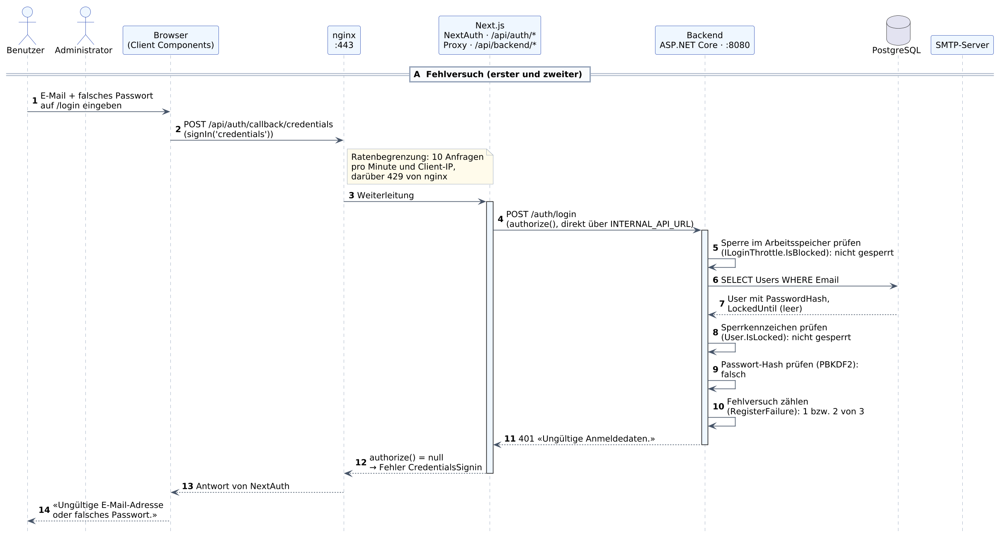
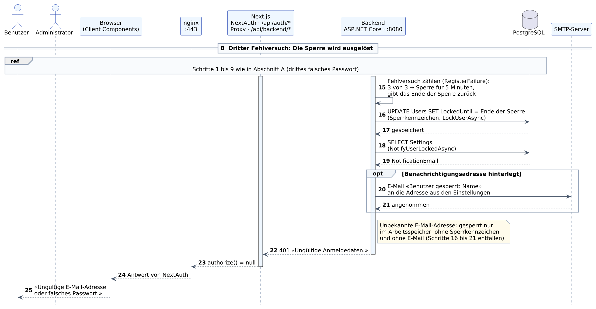
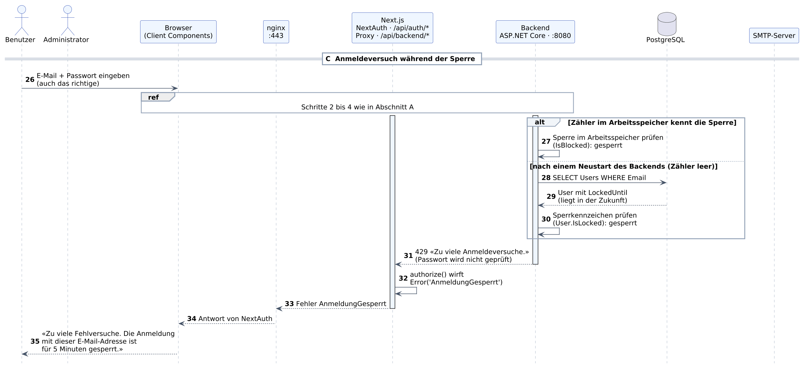
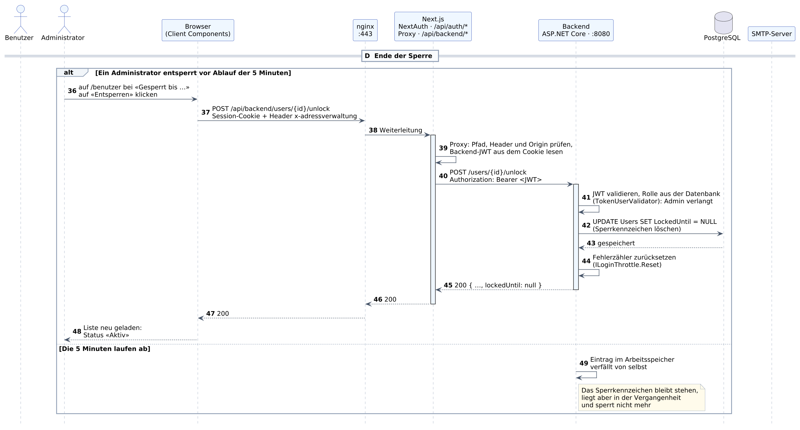
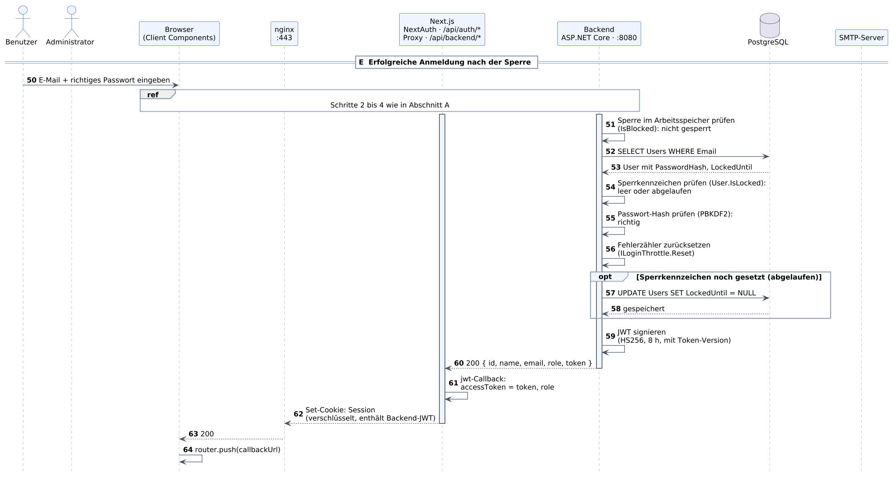

Diese Unterlage erklärt jeden der 64 nummerierten Schritte im Sequenzdiagramm zum Login mit Sperrmechanismus (documentation/Sequenzdiagramm_Login_Sperre.svg, Quelle Sequenzdiagramm_Login_Sperre.puml). Das Diagramm zeigt, was bei falschen Passwörtern geschieht, wie die Sperre entsteht, wie sie wirkt und wie sie wieder endet.
Nach dem Durcharbeiten können Sie erklären, wann ein Benutzer gesperrt wird, wo die Sperre gespeichert ist, wer davon erfährt und auf welchen Wegen sie endet – und Sie wissen zu jedem Schritt, wo er im Code steht.
Zu jedem Schritt finden Sie drei Angaben: Was passiert beschreibt den Vorgang, Im Code nennt die Datei und die Stelle, Warum so begründet die Lösung oder weist auf eine Stolperfalle hin. Pfade im Frontend beziehen sich auf frontend/, Pfade im Backend auf backend/AdressverwaltungApi/.
Den Login ohne Sperre und das Erfassen einer Adresse beschreibt die Unterlage Schulungsunterlage_Sequenzdiagramm.pdf. Die Schritte 1 bis 4 und 59 bis 64 sind dort ausführlicher erklärt.
Jede senkrechte Linie steht für einen Beteiligten, die Zeit läuft von oben nach unten. Ein durchgezogener Pfeil ist eine Anfrage, ein gestrichelter Pfeil eine Antwort. Ein Pfeil, der zum selben Beteiligten zurückführt, ist ein interner Arbeitsschritt. Ein Rahmen mit «alt» enthält zwei Alternativen, von denen genau eine abläuft; ein Rahmen mit «opt» läuft nur unter der genannten Bedingung ab. Ein Rahmen mit «ref» steht für Schritte, die an anderer Stelle des Diagramms schon gezeigt sind; er trägt keine eigenen Nummern.
| Beteiligter | Aufgabe in diesem Ablauf | Im Projekt |
|---|---|---|
| Benutzer | Die Person, die sich anmelden will. | – |
| Administrator | Ein Benutzer mit der Rolle Admin. Kann eine Sperre vorzeitig aufheben. | – |
| Browser (Client Components) | Zeigt das Login-Formular und die Benutzerverwaltung, sendet Anfragen. | app/login, app/benutzer, lib/api.ts |
| nginx :443 | Einziger Zugang von aussen. Beendet TLS, begrenzt die Anmeldeversuche pro Client-IP und verteilt Anfragen. | nginx/nginx.conf |
| Next.js | NextAuth nimmt die Anmeldung entgegen und fragt das Backend. Der Proxy /api/backend hängt bei API-Aufrufen das Token an. | lib/auth.ts, app/api/backend/[...pfad]/route.ts |
| Backend ASP.NET Core :8080 | Prüft Passwörter, zählt Fehlversuche, setzt und löscht das Sperrkennzeichen, sendet Benachrichtigungen. | AuthController, UsersController, MemoryLoginThrottle, EmailNotificationService |
| PostgreSQL | Speichert Benutzer (mit Sperrkennzeichen LockedUntil) und Einstellungen. | Tabellen Users, Settings |
| SMTP-Server | Nimmt die E-Mail über die Sperre entgegen und stellt sie zu. | SmtpSettings__* in docker-compose.yml |
Drei Bremsen, die man nicht verwechseln darf. nginx begrenzt die Anmeldeversuche pro Client-IP auf 10 pro Minute. Das Backend zählt Fehlversuche pro E-Mail-Adresse im Arbeitsspeicher und sperrt nach dem dritten für 5 Minuten. Und beim betroffenen Benutzer steht die Sperre zusätzlich als Sperrkennzeichen in der Datenbank. Die zweite und dritte Bremse gehören zusammen und bilden den Sperrmechanismus dieses Diagramms.
Das Sperrkennzeichen ist ein Zeitpunkt. Die Spalte Users.LockedUntil enthält das Ende der Sperre. Leer oder in der Vergangenheit heisst «nicht gesperrt», in der Zukunft heisst «gesperrt». Deshalb braucht es keinen Dienst, der abgelaufene Sperren aufräumt.
Gesperrt wird die E-Mail-Adresse, vermerkt wird beim Benutzer. Der Zähler sperrt jede Adresse nach drei Fehlversuchen, auch eine unbekannte – so verrät die Sperre nicht, welche Konten es gibt. Sperrkennzeichen und E-Mail gibt es nur, wenn zur Adresse ein Benutzer gehört.
Die ersten beiden falschen Passwörter laufen gleich ab: Das Backend prüft beide Sperren, findet keine, stellt das falsche Passwort fest und zählt den Fehlversuch. Der Benutzer sieht die übliche Fehlermeldung.

Beteiligte: Benutzer → Browser
Was passiert: Der Benutzer gibt auf der Login-Seite seine E-Mail-Adresse und ein falsches Passwort ein und klickt auf «Anmelden». Bis hierhin verlässt nichts den Browser.
Im Code: frontend/app/login/LoginForm.tsx: Die Felder sind Controlled Inputs (useState).
Warum so: Der Ablauf ist für das erste und das zweite falsche Passwort derselbe. Welcher Versuch es ist, weiss nur das Backend.
Beteiligte: Browser → nginx
Was passiert: Das Formular ruft signIn('credentials') auf. NextAuth sendet E-Mail-Adresse und Passwort per POST an seinen eigenen Endpunkt. Die Verbindung endet verschlüsselt bei nginx.
Im Code: app/login/LoginForm.tsx, Funktion handleCredentials: signIn('credentials', { email, password, redirect: false, callbackUrl }).
Warum so: Hier sitzt die erste von drei Bremsen: nginx lässt für diesen Pfad pro Client-IP höchstens 10 Anfragen pro Minute zu (limit_req zone=anmeldung in nginx/nginx.conf) und antwortet darüber selbst mit 429. Diese Bremse zählt Anfragen, nicht Fehlversuche, und hat mit dem Sperrkennzeichen nichts zu tun.
Beteiligte: nginx → Next.js
Was passiert: nginx leitet die Anfrage an den Next.js-Server weiter. /api/auth/… gehört zu NextAuth im Frontend, nicht zum Backend.
Im Code: nginx/nginx.conf: Block location /api/auth/callback/credentials.
Warum so: Verwechslungsgefahr: /api/auth ist NextAuth, /auth/ ist das Backend.
Beteiligte: Next.js → Backend
Was passiert: NextAuth ruft die Funktion authorize() auf. Sie läuft auf dem Next.js-Server und sendet E-Mail-Adresse und Passwort als JSON an den Login-Endpunkt des Backends – direkt über das Docker-Netz, ohne nginx.
Im Code: frontend/lib/auth.ts, authorize() im CredentialsProvider; Adresse aus INTERNAL_API_URL. Im Backend: Controllers/AuthController.cs, Methode Login.
Warum so: Das Passwort geht nie direkt vom Browser an das Backend. Der Endpunkt ist der einzige, der ohne Token erreichbar ist.
Beteiligte: Backend (interner Schritt)
Was passiert: Als Erstes fragt der Controller den Fehlerzähler, ob die E-Mail-Adresse gesperrt ist. Beim ersten und zweiten Fehlversuch ist sie es nicht.
Im Code: AuthController.Login: _throttle.IsBlocked(req.Email). Schnittstelle Services/ILoginThrottle.cs, Umsetzung Services/MemoryLoginThrottle.cs.
Warum so: Diese Prüfung kommt vor dem Zugriff auf die Datenbank und gilt für jede E-Mail-Adresse, auch für eine, zu der es keinen Benutzer gibt. So verrät die Sperre nicht, welche Konten existieren. Gross- und Kleinschreibung der Adresse spielen keine Rolle.
Beteiligte: Backend → PostgreSQL
Was passiert: Das Backend sucht den Benutzer mit dieser E-Mail-Adresse.
Im Code: AuthController.FindUserByEmailAsync: Vergleich über ToUpper(), also unabhängig von Gross- und Kleinschreibung.
Warum so: Die Abfrage läuft über EF Core mit Parametern; die Eingabe gelangt nie als Text in das SQL.
Beteiligte: PostgreSQL → Backend
Was passiert: Die Datenbank liefert die Zeile des Benutzers. Für diesen Ablauf zählen zwei Spalten: PasswordHash und das Sperrkennzeichen LockedUntil. Es ist jetzt leer.
Im Code: Models/User.cs: public DateTime? LockedUntil. Die Spalte ist timestamp without time zone und enthält eine UTC-Zeit.
Warum so: Das Sperrkennzeichen ist kein Ja/Nein-Feld, sondern ein Zeitpunkt: das Ende der Sperre. Leer bedeutet «nicht gesperrt».
Beteiligte: Backend (interner Schritt)
Was passiert: Der Controller prüft, ob das Sperrkennzeichen des Benutzers in der Zukunft liegt. Es ist leer, also geht es weiter.
Im Code: AuthController.Login: user.IsLocked(DateTime.UtcNow); in Models/User.cs ist das LockedUntil > utcNow.
Warum so: Diese zweite Prüfung braucht es, weil der Zähler aus Schritt 5 nur im Arbeitsspeicher liegt. Nach einem Neustart des Backends wäre eine Sperre sonst vergessen (siehe Schritte 28 bis 30).
Beteiligte: Backend (interner Schritt)
Was passiert: Das Backend berechnet aus dem eingegebenen Passwort und dem gespeicherten Salt den Hash und vergleicht ihn mit dem gespeicherten. Er stimmt nicht überein.
Im Code: AuthController.Login: _hasher.VerifyHashedPassword(…) (PBKDF2, PasswordHasher<User>).
Warum so: Gibt es zur Adresse keinen Benutzer, prüft das Backend trotzdem – gegen einen festen Ersatz-Hash (DummyHash). So dauert die Antwort in beiden Fällen gleich lang.
Beteiligte: Backend (interner Schritt)
Was passiert: Der Controller meldet den Fehlversuch dem Zähler. Dieser steht danach auf 1 beziehungsweise 2. Die Grenze von 3 ist nicht erreicht, es wird nichts gesperrt.
Im Code: AuthController.Login: _throttle.RegisterFailure(req.Email); liefert hier null. In MemoryLoginThrottle: MaxFailures = 3, Window = 5 Minuten.
Warum so: Der Zähler lebt 5 Minuten ab dem ersten Fehlversuch. Wer innerhalb dieser Zeit keine drei Fehlversuche erreicht, beginnt danach wieder bei null. Eine erfolgreiche Anmeldung setzt den Zähler sofort zurück (Schritt 56).
Beteiligte: Backend → Next.js
Was passiert: Das Backend antwortet mit Status 401 und einer bewusst allgemeinen Meldung.
Im Code: AuthController.Login: return Unauthorized(new { message = "Ungültige Anmeldedaten." }).
Warum so: Die Meldung ist für «Adresse unbekannt» und «Passwort falsch» dieselbe. Sie sagt auch nicht, wie viele Versuche noch bleiben.
Beteiligte: Next.js → nginx
Was passiert: authorize() erhält die 401 und gibt null zurück. NextAuth wertet das als abgelehnte Anmeldung und meldet den Fehler CredentialsSignin. Es entsteht keine Sitzung und kein Cookie.
Im Code: frontend/lib/auth.ts: if (!response.ok) return null;.
Warum so: Für NextAuth gibt es bei den Anmeldedaten nur zwei Ausgänge: ein Benutzerobjekt oder kein Benutzerobjekt. Die Sperre braucht deshalb einen eigenen Weg (Schritt 32).
Beteiligte: nginx → Browser
Was passiert: nginx reicht die Antwort von NextAuth unverändert an den Browser weiter.
Im Code: nginx/nginx.conf: proxy_pass http://frontend:3000.
Warum so: nginx verändert die Antwort nicht; es ergänzt nur Sicherheits-Header.
Beteiligte: Browser → Benutzer
Was passiert: Das Formular zeigt «Ungültige E-Mail-Adresse oder falsches Passwort.». Die Felder bleiben ausgefüllt, der Benutzer kann es erneut versuchen.
Im Code: app/login/LoginForm.tsx: result?.error ist gesetzt, also setFehler(…); die Anzeige übernimmt die Komponente Fehlermeldung.
Warum so: Die Meldung erscheint im Formular, nicht in einem Browser-Dialog.
Das dritte falsche Passwort beginnt wie die ersten beiden (Schritte 1 bis 9). Der Unterschied liegt im Zählen: Der dritte Fehlversuch löst die Sperre aus. Gehört die E-Mail-Adresse zu einem Benutzer, setzt das Backend dessen Sperrkennzeichen und meldet die Sperre per E-Mail. Der Benutzer selbst erfährt in diesem Moment noch nichts von der Sperre.

Beteiligte: Backend (interner Schritt)
Was passiert: Der Zähler erreicht 3. Damit ist die E-Mail-Adresse gesperrt, und zwar für 5 Minuten ab diesem Moment. Der Zähler gibt das Ende der Sperre zurück.
Im Code: MemoryLoginThrottle.RegisterFailure: counter.BlockedUntil = DateTime.UtcNow.Add(LockDuration); der Eintrag wird mit neuer Ablaufzeit abgelegt. Rückgabe: das Ende der Sperre, sonst null.
Warum so: Genau ein Fehlversuch löst die Sperre aus – der dritte. Nur bei ihm liefert die Methode einen Wert. Darauf beruht, dass Kennzeichen und E-Mail pro Sperre nur einmal entstehen.
Beteiligte: Backend → PostgreSQL
Was passiert: Gibt es zur Adresse einen Benutzer, schreibt das Backend das Ende der Sperre in dessen Zeile: Das Sperrkennzeichen ist gesetzt.
Im Code: AuthController.LockUserAsync: user.LockedUntil = …, danach SaveChangesAsync(). Aufruf nur, wenn lockedUntil is not null && user is not null.
Warum so: Die Zeit wird als UTC gespeichert, aber mit Kind=Unspecified, weil Npgsql für diesen Spaltentyp nichts anderes annimmt. In den Audit-Feldern steht als Ändernder system, weil bei der Anmeldung noch niemand angemeldet ist.
Beteiligte: PostgreSQL → Backend
Was passiert: Die Datenbank bestätigt die Änderung. Ab jetzt steht die Sperre dauerhaft beim Benutzer – unabhängig vom Arbeitsspeicher des Backends.
Im Code: Spalte Users.LockedUntil. In einer bestehenden Datenbank legt SchemaUpgrader.Apply die Spalte beim Start an.
Warum so: Erst wird gespeichert, dann benachrichtigt. Scheitert die E-Mail, gilt die Sperre trotzdem.
Beteiligte: Backend → PostgreSQL
Was passiert: Für die Benachrichtigung liest das Backend die Einstellungen.
Im Code: Services/EmailNotificationService.cs, Methode NotifyUserLockedAsync: _context.Settings.FirstOrDefaultAsync().
Warum so: Der Controller kennt weder Empfänger noch Text. Das ist Aufgabe des Benachrichtigungsdienstes.
Beteiligte: PostgreSQL → Backend
Was passiert: Die Datenbank liefert die Benachrichtigungsadresse. Es ist dieselbe Adresse, die auch neue Adressen und gelöschte Benutzer gemeldet bekommt.
Im Code: Models/Settings.cs: NotificationEmail; gepflegt auf der Seite /einstellungen.
Warum so: Ist das Feld leer, endet die Benachrichtigung hier mit einem Eintrag im Log. Gesperrt wird trotzdem.
Beteiligte: Backend → SMTP-Server
Was passiert: Das Backend sendet eine E-Mail an die Benachrichtigungsadresse. Sie nennt Name, E-Mail-Adresse und Rolle des gesperrten Benutzers und weist darauf hin, dass die Sperre nach 5 Minuten endet oder in der Benutzerverwaltung aufgehoben werden kann.
Im Code: NotifyUserLockedAsync ruft IEmailService.SendAsync auf; Umsetzung Services/EmailService.cs über SMTP (Port 587, STARTTLS).
Warum so: Die E-Mail geht an die Adresse aus den Einstellungen, nicht an den gesperrten Benutzer. Wer Passwörter rät, soll nicht auch noch eine Bestätigung erhalten.
Beteiligte: SMTP-Server → Backend
Was passiert: Der SMTP-Server bestätigt die Annahme. Das Backend schreibt «E-Mail gesendet an …» in sein Log.
Im Code: EmailService.SendAsync: _logger.LogInformation("E-Mail gesendet an {To}: {Subject}", …).
Warum so: Schlägt der Versand fehl, fängt NotifyUserLockedAsync den Fehler ab und schreibt ihn ins Log. Die Anmeldung antwortet trotzdem wie vorgesehen.
Beteiligte: Backend → Next.js
Was passiert: Auch der dritte Fehlversuch wird mit 401 beantwortet – nicht mit 429.
Im Code: AuthController.Login: dieselbe Stelle wie in Schritt 11.
Warum so: Die Antwort 429 gibt es erst beim nächsten Versuch. Der Versuch, der die Sperre auslöst, war selbst ein gewöhnlicher Fehlversuch.
Beteiligte: Next.js → nginx
Was passiert: Wie in Schritt 12: keine Sitzung, kein Cookie.
Im Code: frontend/lib/auth.ts: if (!response.ok) return null;.
Warum so: Für das Frontend sieht der dritte Fehlversuch genau so aus wie die ersten beiden.
Beteiligte: nginx → Browser
Was passiert: nginx reicht die Antwort an den Browser weiter.
Im Code: nginx/nginx.conf.
Warum so: Wie in Schritt 13.
Beteiligte: Browser → Benutzer
Was passiert: Das Formular zeigt noch einmal «Ungültige E-Mail-Adresse oder falsches Passwort.». Von der Sperre erfährt der Benutzer erst beim nächsten Versuch.
Im Code: app/login/LoginForm.tsx.
Warum so: Im Hintergrund ist jetzt dreierlei geschehen: Der Zähler sperrt, das Sperrkennzeichen ist gesetzt, die E-Mail ist unterwegs.
Jeder weitere Versuch innerhalb der 5 Minuten wird abgewiesen, bevor das Passwort geprüft wird – auch das richtige. Im Normalfall erkennt das Backend die Sperre am Zähler im Arbeitsspeicher (Schritt 27). Wurde das Backend inzwischen neu gestartet, ist der Zähler leer; dann greift das Sperrkennzeichen aus der Datenbank (Schritte 28 bis 30).

Beteiligte: Benutzer → Browser
Was passiert: Der Benutzer versucht es innerhalb der 5 Minuten noch einmal – diesmal vielleicht mit dem richtigen Passwort.
Im Code: app/login/LoginForm.tsx; es folgen die Schritte 2 bis 4.
Warum so: Ob das Passwort jetzt stimmt, spielt keine Rolle: Es wird nicht mehr geprüft.
Beteiligte: Backend (interner Schritt)
Was passiert: Im Normalfall erkennt der Zähler die Sperre sofort. Die Datenbank wird nicht gefragt.
Im Code: AuthController.Login: _throttle.IsBlocked(req.Email) liefert true; in MemoryLoginThrottle: counter.BlockedUntil > DateTime.UtcNow.
Warum so: Versuche während der Sperre zählen nicht weiter und verlängern die Sperre nicht. Sie lösen auch keine weitere E-Mail aus.
Beteiligte: Backend → PostgreSQL
Was passiert: Wurde das Backend seit der Sperre neu gestartet, ist der Zähler leer und Schritt 27 findet nichts. Der Controller liest dann wie gewohnt den Benutzer.
Im Code: AuthController.FindUserByEmailAsync.
Warum so: Das ist der Fall, für den es das Sperrkennzeichen in der Datenbank braucht.
Beteiligte: PostgreSQL → Backend
Was passiert: Die Datenbank liefert den Benutzer. Sein Sperrkennzeichen liegt noch in der Zukunft.
Im Code: Spalte Users.LockedUntil.
Warum so: Für eine E-Mail-Adresse ohne Benutzer gibt es kein Kennzeichen. Ihre Sperre ist nach einem Neustart tatsächlich weg.
Beteiligte: Backend (interner Schritt)
Was passiert: Der Controller stellt fest, dass der Benutzer gesperrt ist, und bricht ab.
Im Code: AuthController.Login: if (user is not null && user.IsLocked(DateTime.UtcNow)) return TooManyRequests();.
Warum so: Die Prüfung steht vor der Passwortprüfung. Ein Fehlversuch wird hier nicht gezählt.
Beteiligte: Backend → Next.js
Was passiert: Das Backend antwortet mit Status 429. Das Passwort hat es nicht angesehen.
Im Code: AuthController.TooManyRequests(): StatusCode(StatusCodes.Status429TooManyRequests, …).
Warum so: 429 statt 401 ist das Zeichen, an dem das Frontend die Sperre erkennt.
Beteiligte: Next.js (interner Schritt)
Was passiert: authorize() erkennt den Status 429 und wirft einen Fehler mit dem Text AnmeldungGesperrt, statt null zurückzugeben.
Im Code: frontend/lib/auth.ts: if (response.status === 429) throw new Error(ANMELDUNG_GESPERRT);. Die Konstante steht in lib/anmeldung.ts.
Warum so: Bei null meldet NextAuth immer denselben Fehler. Ein geworfener Fehler dagegen erreicht das Formular mit seinem eigenen Text – der einzige Weg, die Sperre vom falschen Passwort zu unterscheiden.
Beteiligte: Next.js → nginx
Was passiert: NextAuth lehnt die Anmeldung ab und gibt den Fehlertext mit. Es entsteht keine Sitzung.
Im Code: NextAuth (Route app/api/auth/[...nextauth]).
Warum so: Der Text ist ein fester Code, keine Meldung für den Benutzer.
Beteiligte: nginx → Browser
Was passiert: nginx reicht die Antwort an den Browser weiter.
Im Code: nginx/nginx.conf.
Warum so: Diese 429 kommt aus dem Backend und ist nicht mit der 429 von nginx aus Schritt 2 zu verwechseln: Jene betrifft zu viele Anfragen von einer IP.
Beteiligte: Browser → Benutzer
Was passiert: Das Formular zeigt «Zu viele Fehlversuche. Die Anmeldung mit dieser E-Mail-Adresse ist für 5 Minuten gesperrt.».
Im Code: app/login/LoginForm.tsx: if (result?.error === ANMELDUNG_GESPERRT); die Zahl stammt aus SPERRE_MINUTEN in lib/anmeldung.ts.
Warum so: SPERRE_MINUTEN dient nur dem Text. Massgebend ist LockDuration im Backend; beide Werte sind gemeinsam zu ändern.
Die Sperre endet auf einem von zwei Wegen: Ein Administrator löscht das Sperrkennzeichen von Hand (Schritte 36 bis 48), oder die 5 Minuten laufen ab (Schritt 49).

Beteiligte: Administrator → Browser
Was passiert: Ein Administrator öffnet die Seite «Benutzer». Beim gesperrten Benutzer steht «Gesperrt bis …» und daneben die Aktion «Entsperren». Er klickt darauf.
Im Code: frontend/app/benutzer/page.tsx: Die Aktion erscheint nur, wenn lockedUntil in der Zukunft liegt (Funktion gesperrtBis).
Warum so: Von der Sperre weiss der Administrator aus der E-Mail (Schritt 20) oder aus der Liste.
Beteiligte: Browser → nginx
Was passiert: Der Browser ruft den Proxy der eigenen Anwendung auf. Er sendet das Session-Cookie und den Header x-adressverwaltung mit, aber kein Token.
Im Code: frontend/lib/api.ts: entsperreBenutzer(id) über apiRequest und apiFetch.
Warum so: Der Browser kennt das Backend-Token nicht. Er spricht nur mit Next.js.
Beteiligte: nginx → Next.js
Was passiert: nginx leitet /api/backend/… wie alle übrigen Pfade an Next.js.
Im Code: nginx/nginx.conf: location /.
Warum so: Der Pfad /users direkt ginge an das Backend; er ist für Werkzeuge mit eigenem Token gedacht.
Beteiligte: Next.js (interner Schritt)
Was passiert: Der Proxy prüft, ob der Bereich users erlaubt ist, ob der eigene Header vorhanden ist und ob die Herkunft stimmt. Dann liest er das Backend-JWT aus dem verschlüsselten Session-Cookie.
Im Code: frontend/app/api/backend/[...pfad]/route.ts: ERLAUBTE_BEREICHE, Prüfung von API_HEADER und origin, getToken({ req }).
Warum so: Header und Herkunft schützen vor Cross-Site-Request-Forgery: Eine fremde Seite kann diesen Aufruf nicht im Namen des Administrators auslösen.
Beteiligte: Next.js → Backend
Was passiert: Der Proxy sendet die Anfrage an das Backend und hängt das Token als Authorization: Bearer … an.
Im Code: route.ts: fetch(`${INTERNAL_API}/…`). Im Backend: Controllers/UsersController.cs, Methode UnlockUser.
Warum so: Der Aufruf geht direkt über das Docker-Netz, ohne nginx.
Beteiligte: Backend (interner Schritt)
Was passiert: Das Backend prüft Signatur und Ablauf des Tokens, liest Rolle und Token-Version des Aufrufers aus der Datenbank und verlangt die Rolle Admin.
Im Code: TokenUserValidator.ValidateAsync; an der Klasse UsersController steht [Authorize(Roles = Roles.Admin)].
Warum so: Die Rolle kommt aus der Datenbank, nicht aus dem Token. Wer nicht Admin ist, erhält 403.
Beteiligte: Backend → PostgreSQL
Was passiert: Das Backend löscht das Sperrkennzeichen des Benutzers.
Im Code: UsersController.UnlockUser: user.LockedUntil = null; und SaveChangesAsync().
Warum so: Das ist das «manuelle Löschen vor Ablauf der 5 Minuten». Auch ein neues Passwort in der Benutzerverwaltung löscht das Kennzeichen.
Beteiligte: PostgreSQL → Backend
Was passiert: Die Datenbank bestätigt die Änderung.
Im Code: Spalte Users.LockedUntil ist wieder leer; ChangedBy nennt den Administrator.
Warum so: Anders als beim Setzen (Schritt 16) ist hier jemand angemeldet, der in den Audit-Feldern erscheint.
Beteiligte: Backend (interner Schritt)
Was passiert: Das Backend löscht auch den Eintrag im Arbeitsspeicher.
Im Code: UsersController.UnlockUser: _throttle.Reset(user.Email).
Warum so: Beides ist nötig. Bliebe der Zähler stehen, wäre der Benutzer trotz gelöschtem Kennzeichen weiter gesperrt (Schritt 27).
Beteiligte: Backend → Next.js
Was passiert: Das Backend antwortet mit dem Benutzer; lockedUntil ist jetzt null.
Im Code: UsersController.ToResponse, Typ UserResponse in Dtos/UserDtos.cs.
Warum so: Der Passwort-Hash ist nie Teil der Antwort.
Beteiligte: Next.js → nginx
Was passiert: Der Proxy reicht Status und Body weiter.
Im Code: route.ts: new NextResponse(…) mit Cache-Control: no-store.
Warum so: Die Antwort wird nirgends zwischengespeichert.
Beteiligte: nginx → Browser
Was passiert: nginx reicht die Antwort an den Browser weiter.
Im Code: nginx/nginx.conf.
Warum so: Wie bei jeder Antwort ergänzt nginx die Sicherheits-Header.
Beteiligte: Browser → Administrator
Was passiert: Die Seite lädt die Benutzerliste neu. Der Benutzer erscheint mit dem Status «Aktiv», die Aktion «Entsperren» ist verschwunden. Er kann sich sofort wieder anmelden.
Im Code: app/benutzer/page.tsx: ausfuehren(…) ruft nach der Aktion ladeDaten() auf.
Warum so: Die Liste zeigt den Stand beim Laden. Eine Sperre, die inzwischen von selbst abgelaufen ist, gilt in der Anzeige ebenfalls als «Aktiv».
Beteiligte: Backend (interner Schritt)
Was passiert: Entsperrt niemand, endet die Sperre von selbst: Der Eintrag im Arbeitsspeicher verfällt. Das Sperrkennzeichen bleibt in der Datenbank stehen, liegt nun aber in der Vergangenheit.
Im Code: MemoryLoginThrottle: AbsoluteExpirationRelativeToNow = LockDuration. User.IsLocked vergleicht mit der aktuellen Zeit.
Warum so: Es gibt keinen Hintergrunddienst, der abgelaufene Kennzeichen löscht. Weil das Kennzeichen ein Zeitpunkt ist, braucht es auch keinen: Ein vergangener Zeitpunkt sperrt nicht.
Nach dem Ende der Sperre verläuft die Anmeldung wie jede erfolgreiche Anmeldung. Neu ist nur das Aufräumen: Ein abgelaufenes Sperrkennzeichen wird bei dieser Gelegenheit geleert (Schritte 57 und 58).

Beteiligte: Benutzer → Browser
Was passiert: Der Benutzer meldet sich nach dem Ende der Sperre mit dem richtigen Passwort an.
Im Code: app/login/LoginForm.tsx; es folgen die Schritte 2 bis 4.
Warum so: Nach dem Ablauf beginnt auch der Fehlerzähler wieder bei null: Es stehen erneut drei Versuche zur Verfügung.
Beteiligte: Backend (interner Schritt)
Was passiert: Der Zähler kennt keine Sperre mehr – er wurde zurückgesetzt (Schritt 44) oder ist abgelaufen (Schritt 49).
Im Code: AuthController.Login: _throttle.IsBlocked(req.Email) liefert false.
Warum so: Wie in Schritt 5.
Beteiligte: Backend → PostgreSQL
Was passiert: Das Backend liest den Benutzer.
Im Code: AuthController.FindUserByEmailAsync.
Warum so: Wie in Schritt 6.
Beteiligte: PostgreSQL → Backend
Was passiert: Die Datenbank liefert den Benutzer. Das Sperrkennzeichen ist leer (nach dem Entsperren) oder enthält einen vergangenen Zeitpunkt (nach dem Ablauf).
Im Code: Spalte Users.LockedUntil.
Warum so: Beide Zustände bedeuten dasselbe: nicht gesperrt.
Beteiligte: Backend (interner Schritt)
Was passiert: Der Controller stellt fest, dass keine Sperre läuft.
Im Code: user.IsLocked(DateTime.UtcNow) liefert false.
Warum so: Der Vergleich LockedUntil > utcNow ist für ein leeres Feld ebenfalls falsch.
Beteiligte: Backend (interner Schritt)
Was passiert: Der berechnete Hash stimmt mit dem gespeicherten überein.
Im Code: _hasher.VerifyHashedPassword(…).
Warum so: Wie in Schritt 9, nur mit anderem Ergebnis.
Beteiligte: Backend (interner Schritt)
Was passiert: Nach einer erfolgreichen Anmeldung löscht der Controller den Zähler der Adresse.
Im Code: AuthController.Login: _throttle.Reset(req.Email).
Warum so: So zählen frühere Fehlversuche nicht weiter. Zwei Fehlversuche, eine erfolgreiche Anmeldung und wieder zwei Fehlversuche führen nicht zur Sperre.
Beteiligte: Backend → PostgreSQL
Was passiert: Steht im Sperrkennzeichen noch ein abgelaufener Zeitpunkt, leert das Backend das Feld.
Im Code: AuthController.Login: if (user.LockedUntil is not null) { user.LockedUntil = null; await _context.SaveChangesAsync(); }.
Warum so: Reines Aufräumen: Gesperrt hat das Kennzeichen schon nicht mehr. Nach dem Entsperren durch einen Administrator entfällt der Schritt.
Beteiligte: PostgreSQL → Backend
Was passiert: Die Datenbank bestätigt die Änderung.
Im Code: Spalte Users.LockedUntil.
Warum so: Damit ist der Benutzerstamm wieder im Ausgangszustand.
Beteiligte: Backend (interner Schritt)
Was passiert: Das Backend stellt das Token aus: gültig 8 Stunden, mit der Token-Version des Benutzers.
Im Code: Services/JwtTokenService.cs, Methode CreateToken.
Warum so: Ab hier verläuft die Anmeldung wie immer.
Beteiligte: Backend → Next.js
Was passiert: Das Backend antwortet mit Id, Name, E-Mail-Adresse, Rolle und Token.
Im Code: LoginResponse in Dtos/AuthDtos.cs.
Warum so: Die Antwort bleibt auf dem Server von Next.js.
Beteiligte: Next.js (interner Schritt)
Was passiert: NextAuth übernimmt Id, Rolle und Backend-Token in seine eigene Sitzung.
Im Code: frontend/lib/auth.ts: Callback jwt.
Warum so: Das Backend-Token liegt nur im verschlüsselten Cookie.
Beteiligte: Next.js → nginx
Was passiert: NextAuth setzt das Session-Cookie.
Im Code: NextAuth (Route app/api/auth/[...nextauth]).
Warum so: Der Browser kann das Cookie mitsenden, aber nicht lesen.
Beteiligte: nginx → Browser
Was passiert: nginx reicht die Antwort an den Browser weiter.
Im Code: nginx/nginx.conf.
Warum so: Der Benutzer ist angemeldet.
Beteiligte: Browser (interner Schritt)
Was passiert: Das Formular wechselt zur ursprünglich gewünschten Seite, sonst zur Adressliste.
Im Code: app/login/LoginForm.tsx: router.push(callbackUrl) und router.refresh().
Warum so: Das Ziel wird geprüft: Weitergeleitet wird nur innerhalb der eigenen Anwendung.
| Zustand | Zähler im Arbeitsspeicher | Sperrkennzeichen LockedUntil | Anmeldung |
|---|---|---|---|
| Kein Fehlversuch | kein Eintrag | leer | möglich |
| 1 oder 2 Fehlversuche | 1 bzw. 2 | leer | möglich |
| 3 Fehlversuche (gesperrt) | 3, Sperre bis in 5 Minuten | Ende der Sperre | abgewiesen mit 429 |
| Gesperrt, Backend neu gestartet | kein Eintrag | Ende der Sperre | abgewiesen mit 429 |
| Von einem Administrator entsperrt | kein Eintrag | leer | möglich |
| 5 Minuten abgelaufen | kein Eintrag | vergangener Zeitpunkt | möglich |
| Erfolgreich angemeldet | kein Eintrag | leer | – |
| Unbekannte E-Mail-Adresse nach 3 Fehlversuchen | 3, Sperre bis in 5 Minuten | gibt es nicht | abgewiesen mit 429; nach einem Neustart wieder 401 |
Users.LockedUntil und sendet eine E-Mail an die Adresse aus den Einstellungen – einmal pro Sperre.| Frage | Antwort |
|---|---|
| 1. Welche Meldung sieht ein Benutzer nach dem dritten falschen Passwort? | Noch die übliche: «Ungültige E-Mail-Adresse oder falsches Passwort.» (Schritte 22 bis 25). Die Meldung zur Sperre erscheint erst beim nächsten Versuch (Schritt 35). |
| 2. Der Benutzer gibt während der Sperre das richtige Passwort ein. Was geschieht? | Das Backend antwortet mit 429, ohne das Passwort zu prüfen (Schritte 27 und 31). |
| 3. Wozu braucht es das Sperrkennzeichen, wenn der Zähler die Sperre schon kennt? | Der Zähler liegt im Arbeitsspeicher und ist nach einem Neustart leer. Das Kennzeichen steht in der Datenbank und gilt weiter (Schritte 28 bis 30). Ausserdem macht es die Sperre in der Benutzerverwaltung sichtbar. |
| 4. Wer erhält die E-Mail über eine Sperre? | Die Benachrichtigungsadresse aus den Einstellungen, nicht der gesperrte Benutzer (Schritte 18 bis 20). Ist keine hinterlegt, wird nichts gesendet. |
| 5. Jemand versucht es während der Sperre zehnmal. Wie viele E-Mails gehen hinaus? | Eine. Nur der Fehlversuch, der die Sperre auslöst, führt zu Kennzeichen und E-Mail (Schritt 15); spätere Versuche werden vorher abgewiesen. |
| 6. Welche zwei Dinge muss «Entsperren» tun? | Das Sperrkennzeichen löschen (Schritt 42) und den Zähler zurücksetzen (Schritt 44). Fehlt eines, bleibt der Benutzer gesperrt. |
| 7. Niemand entsperrt. Wer löscht das Sperrkennzeichen nach 5 Minuten? | Zunächst niemand: Es liegt dann in der Vergangenheit und sperrt nicht mehr (Schritt 49). Die nächste erfolgreiche Anmeldung leert das Feld (Schritt 57). |
| 8. Wie unterscheidet das Login-Formular die Sperre vom falschen Passwort? | authorize() gibt bei 401 null zurück, wirft aber bei 429 einen Fehler mit dem Text AnmeldungGesperrt (Schritt 32). Das Formular vergleicht result.error damit (Schritt 35). |
| 9. Was geschieht bei drei Fehlversuchen für eine E-Mail-Adresse, zu der es keinen Benutzer gibt? | Die Adresse ist im Arbeitsspeicher gesperrt und erhält 429. Sperrkennzeichen und E-Mail gibt es nicht; ein Neustart des Backends hebt diese Sperre auf. |
| 10. Beim Anmelden erscheint 429, obwohl noch kein Passwort falsch war. Woran kann das liegen? | An nginx: mehr als 10 Anmeldeversuche pro Minute von derselben IP (Schritt 2). Diese Antwort erreicht das Backend nicht. |
| Begriff | Bedeutung |
|---|---|
| Sperrkennzeichen | Die Spalte Users.LockedUntil: Ende der Anmeldesperre als UTC-Zeit, sonst leer. |
| Fehlerzähler (Throttle) | MemoryLoginThrottle: zählt Fehlversuche pro E-Mail-Adresse im Arbeitsspeicher und sperrt nach dem dritten. |
| Benachrichtigungsadresse | Settings.NotificationEmail; gepflegt auf der Seite «Einstellungen». |
| 401 | HTTP-Status «nicht angemeldet»: hier die Antwort auf falsche Anmeldedaten. |
| 429 | HTTP-Status «zu viele Anfragen»: vom Backend bei einer Sperre, von nginx bei zu vielen Anfragen pro IP. |
| authorize() | Funktion des NextAuth-Credentials-Providers, die die Anmeldedaten beim Backend prüft. |
| Proxy /api/backend | Route in Next.js, die API-Aufrufe des Browsers mit dem Token an das Backend weiterreicht. |